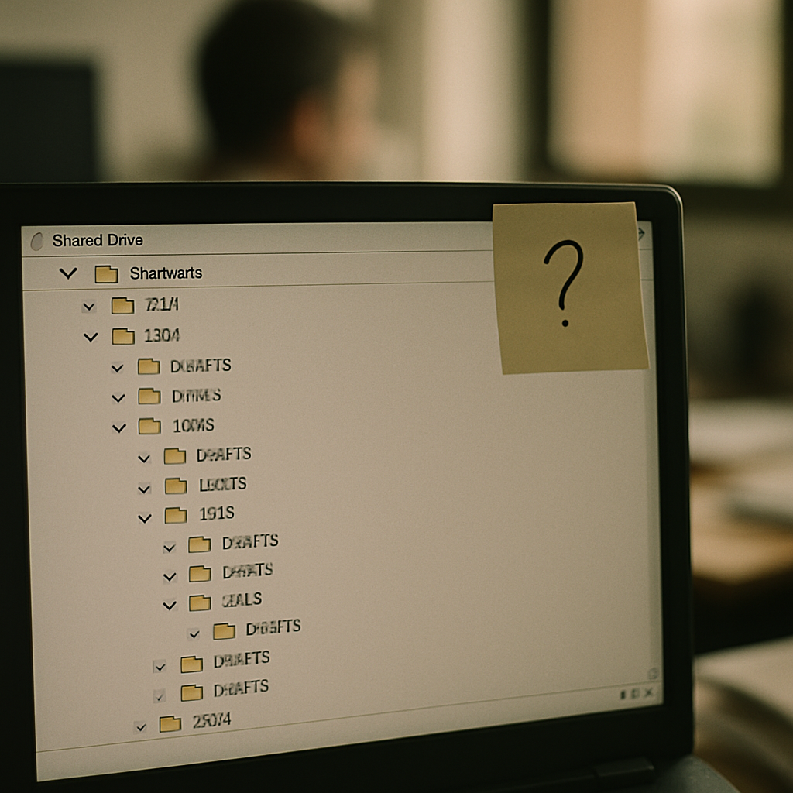

Blog · RAG knowledge base
Hai la documentazione. Hai i processi scritti, i manuali, le policy. Il problema non è che mancano le informazioni — è che sono disperse su quattro piattaforme diverse, aggiornate da persone diverse, cercate con strumenti pensati per archivi molto più piccoli. Nel frattempo, ogni domanda interna costa 15-20 minuti e almeno due persone coinvolte.
Hai un collega che sa dove si trova quel documento. Hai un'altra persona che ricorda di averlo visto su Confluence. Una terza che giura sia in una cartella Drive condivisa sei mesi fa. Venti minuti dopo, hai ancora la risposta a metà. Nelle PMI italiane sotto i 100 dipendenti, la documentazione interna cresce senza un centro: Notion per i processi, Confluence per il tecnico, Drive per i contratti, PDF sparsi per i manuali prodotto. Nessuno strumento parla con l'altro.
Il problema non è che le informazioni mancano. Esistono in troppi posti contemporaneamente, in formati diversi, aggiornate in momenti diversi da persone diverse. Un commerciale che deve rispondere a un cliente su una policy di reso cerca nel posto sbagliato per quattro minuti, poi manda un messaggio su Slack a qualcuno dell'amministrazione, che risponde dopo un'ora. Il cliente aspetta. La risposta arriva. Ma il costo nascosto è già stato pagato.
Uno scenario simile si ripete venti volte al giorno per ogni membro del team. Questo significa ore — non minuti — perse ogni settimana in ricerche interne. Per un team remoto o in crescita rapida, dove non puoi contare sulla persona seduta accanto a te, il costo diventa ancora più alto. I nuovi assunti fanno le stesse cinquanta domande dei loro predecessori. Nessuno le ha mai raccolte in modo sistematico. Nessuno sa dove guardare.
Notion, Confluence e Google Drive hanno tutti una funzione di ricerca. Digiti una parola chiave, ottieni una lista di documenti. È un inizio. Questo sistema funziona discretamente se sai già cosa stai cercando, se ricordi il titolo del documento, se il file non è un PDF scansionato, se la parola che usi coincide esattamente con quella usata da chi ha scritto il documento. Per chi conosce bene l'archivio è utile. Per tutti gli altri — i nuovi arrivati, chi lavora in un reparto diverso, chi non ha mai visto quella documentazione — è quasi inutile.
La ricerca full-text restituisce una lista, non risponde a una domanda. Se chiedi "qual è la procedura per attivare il rimborso spese oltre i 500 euro?", Notion ti mostra dieci documenti che contengono "rimborso" e "spese". Poi devi aprirli uno per uno, leggere, capire quale sia quello giusto, trovare il passaggio rilevante. Il lavoro vero lo fai ancora tu, manualmente, dopo la ricerca. Lo strumento ti ha solo spostato il problema di un gradino.
Tra il 60 e il 70% delle ricerche interne in una PMI con documentazione distribuita non arrivano alla risposta corretta al primo tentativo. O si trova il documento sbagliato, o la versione vecchia, o si chiede a una persona che interpreta a memoria. La ricerca full-text è uno strumento degli anni '90 applicato a una quantità di documenti che negli anni '90 nessuna PMI avrebbe mai prodotto.

Un sistema RAG — Retrieval-Augmented Generation — non è un motore di ricerca migliore. È una categoria diversa. Invece di restituire una lista di documenti, risponde alla domanda in linguaggio naturale, citando il documento specifico, la pagina e il passaggio da cui ha estratto l'informazione. Chiedi "qual è la policy sulle ferie per i dipendenti part-time assunti dopo gennaio 2023?" e ricevi una risposta precisa con la fonte allegata. Puoi verificarla. Puoi condividerla. Puoi fidarti di lei perché sai da dove viene.
Architetturalmente, un sistema RAG Knowledge Base funziona su tre componenti: un layer di indicizzazione che trasforma tutti i tuoi documenti — PDF, pagine Notion, Confluence, file Drive — in un formato interrogabile; un layer di recupero semantico che capisce il significato della domanda, non solo le parole; e un layer generativo che costruisce la risposta in linguaggio naturale attingendo solo ai documenti indicizzati, senza inventare nulla. Questa struttura è la differenza tra uno strumento che cita fonti reali e uno che produce risposte plausibili ma false.
Costruire questo sistema in modo che funzioni su documentazione reale — eterogenea, con formati misti, aggiornata da persone diverse con logiche diverse — non è un lavoro di un pomeriggio. Richiede decisioni su come gestire i duplicati, come trattare i documenti obsoleti, come costruire il layer di accesso per ruolo. Chi ha già costruito simili sistemi sa dove si inceppa. Chi lo affronta per la prima volta scopre i problemi nel mezzo del progetto.
Una PMI manifatturiera con quattro stabilimenti in tre regioni diverse gestiva la documentazione tecnica su Drive (manuali macchine), su Confluence (procedure operative), e su una cartella SharePoint ereditata da una fusione tre anni prima. I tecnici di manutenzione impiegavano in media 18-25 minuti per trovare il manuale corretto nella versione aggiornata. Sbagliavano versione nel 30% dei casi. L'azienda aveva anche 12 nuovi assunti ogni anno che richiedevano 6-8 settimane prima di essere operativi in autonomia.
Dopo l'attivazione di un sistema RAG Knowledge Base indicizzato su tutta la documentazione tecnica e procedurale, il tempo medio di risposta su domanda tecnica è sceso a meno di 3 secondi con fonte citata. Gli errori di versione documento si sono quasi azzerati, perché il sistema indicizza sempre la versione più recente e segnala quando esistono versioni precedenti. Il tempo di onboarding per i nuovi tecnici si è ridotto del 40% nelle prime sei settimane: le cinquanta domande più frequenti avevano ora una risposta immediata e verificabile, senza dover aspettare che un collega senior fosse disponibile.
Questo caso mostra un contesto in cui la documentazione esisteva già ed era ragionevolmente ben organizzata — solo distribuita su troppi sistemi. Se la documentazione è frammentata, incompleta o piena di duplicati contraddittori, i risultati sono più lenti da raggiungere. Un sistema RAG amplifica la qualità di ciò che indicizza: se l'input è disordinato, l'output è comunque migliore della ricerca manuale, ma non fa miracoli. La pulizia preliminare della knowledge base è parte del lavoro, non un optional.
| Hai questo | Conviene |
|---|---|
| Meno di 30 documenti, tutti in un unico strumento, team sotto i 10 persone nello stesso ufficio | Non vale costruire un RAG custom: la ricerca nativa e un buon sistema di tag bastano |
| Documentazione su 2-3 piattaforme, team tra 15 e 30 persone, qualche problema di versioning ma gestibile | Valuta prima le soluzioni RAG off-the-shelf (Guru, Tettra, Notion AI): coprono il 60-70% dei casi a costo contenuto |
| Documentazione su 4+ sistemi eterogenei, team oltre i 30 dipendenti o distribuito, requisiti di accesso per ruolo, documenti tecnici complessi | Un RAG Knowledge Base custom ha ROI misurabile in 6-12 mesi: il tempo recuperato giustifica l'investimento |
| Team in crescita rapida con onboarding frequente, clienti o partner che pongono domande tecniche ripetitive, o documentazione regolamentare che cambia spesso | Costruisci ora: ogni mese senza sistema strutturato costa ore di lavoro senior sprecate su domande già risposte |
Questa è la domanda giusta da fare. Un sistema RAG ben costruito risponde solo attingendo ai documenti che hai indicizzato e cita sempre la fonte. Se la risposta non è nei tuoi documenti, il sistema lo dice esplicitamente — non inventa. Il rischio di risposte errate esiste quando la documentazione contiene versioni contraddittorie dello stesso documento, oppure quando il layer di recupero è mal configurato e porta in input passaggi fuori contesto. La fase di validazione e test su domande reali, prima del go-live, è parte obbligatoria del progetto, non un extra. Un sistema in produzione senza test strutturati è un sistema che prima o poi risponde in modo sbagliato senza che nessuno se ne accorga subito.
Dipende da tre fattori: il numero di documenti, la loro eterogeneità di formato, e la qualità dell'organizzazione esistente. Per una PMI con 500-2.000 documenti distribuiti su 3-4 piattaforme, l'indicizzazione tecnica richiede in genere 1-3 settimane. La parte che richiede più tempo non è l'indicizzazione in sé, ma la fase preliminare: decidere cosa entra nel sistema, cosa viene escluso o archiviato, come gestire i documenti con versioni multiple. Se salti questa fase e indicizzi tutto senza criterio, il sistema funziona ma risponde con informazioni obsolete accanto a quelle aggiornate. Meglio rallentare all'inizio che correggere dopo.
ChatGPT e strumenti generici rispondono sulla base del loro training, non sulla base dei tuoi documenti. Se carichi un PDF in una chat, ottieni una risposta su quel singolo documento in quella singola sessione — non un sistema che indicizza e mantiene aggiornata tutta la tua knowledge base nel tempo. La differenza pratica è sostanziale: uno strumento generico è utile per un task puntuale, un sistema RAG Knowledge Base è un'infrastruttura che rimane aggiornata quando aggiungi nuovi documenti, gestisce i permessi per ruolo, e risponde su migliaia di pagine in meno di 3 secondi. Sono strumenti complementari, non alternativi.
Prossimo passo
Apri K-BOT e in 5 minuti ti diciamo se questa categoria di soluzione fa al caso della tua PMI, oppure se basta uno strumento off-the-shelf. Gratuito.
L'offerta K2-AI sulla categoria: cosa fa, come si integra, tempi e modalità.
Descrivi il tuo caso. K-BOT dice se vale custom o se basta uno strumento standard.
Se preferisci una call diretta, scrivici. Rispondiamo in 24 ore con una lettura onesta.